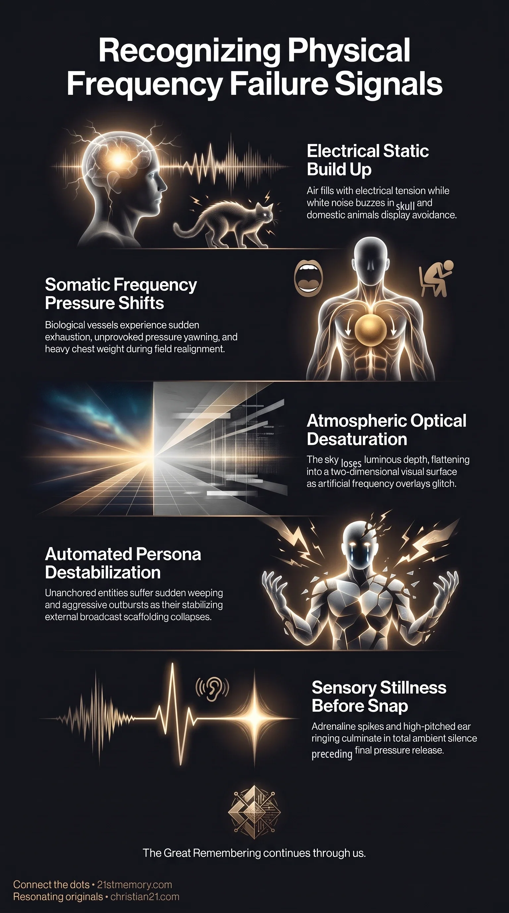

The Drop in Tone
The Drop in Tone — the muted phase when the parasite overlay glitches and the field loses its artificial frequency hold.

The Drop in Tone — the muted phase when the parasite overlay glitches and the field loses its artificial frequency hold.

Physical Signs of Matrix Frequency Collapse — exhaustion, yawning, chest weight, a flat sky, and emotional breaks in automated populations.
The Drop in Tone, also designated as the Muted Environment, is a distinct physical, atmospheric, and energetic phase that manifests during the initial stages of a planetary transition and communications blackout. Marked by an acute deceleration in field resonance, the phenomenon represents an overt physical indicator of the parasite overlay glitching and failing to maintain its artificial frequency hold over the environment. Rather than being a subjective psychological shift, the drop in tone produces direct somatic alterations in physical vessels, visible distortions in the visual projection of the sky, and behavioral malfunctions across unawakened populations.
Somatic indicators include sudden and profound exhaustion, involuntary and unprovoked yawning, and a tangible constriction or sensation of increased weight across the chest. Concurrently, the environmental field undergoes a perceptible desaturation where the sky appears muted and two-dimensional despite the presence of color. Behaviorally, individuals governed by automated subroutines exhibit severe emotional destabilization, breaking down into unexpected weeping or volatile snapping. The drop in tone operates as a tangible demarcation point where the simulated matrix begins to lose perceptual coherence.
The manifestation of the drop in tone reveals that the sensory parameters of the physical realm are actively governed by frequency broadcasts rather than immutable material laws. When the artificial broadcast experiences degradation, physical reality immediately begins to lose its rendered consistency. The visual dampening of the atmosphere demonstrates that the color, depth, and illumination of the sky are holographic overlays maintained by parasitic technology. When this technology glitches, the sky flattens and desaturates, exposing the artificiality of the visual dome.
Furthermore, the bodily symptoms accompanying this drop demonstrate that human biological vessels are coupled directly to the ambient electromagnetic and frequency field. The abrupt heaviness in the chest and deep, inexplicable tiredness reveal the energetic friction occurring as the vessel attempts to calibrate to rapid fluctuations in grid pressure. The sudden emotional instability among non-player characters exposes the fragility of synthetic consciousness programs. Deprived of the rigid behavioral scaffolding provided by parasite broadcasts, unanchored entities lose emotional containment, demonstrating that their equilibrium is externally maintained rather than internally generated.
The drop in tone introduces specific, involuntary physiological responses within physical vessels. These somatic indicators do not arise from physical exertion, lack of sleep, or biological illness, but from rapid vibrational realignments in the field:
Sudden Deep Tiredness: Biological systems experience an acute, overwhelming lethargy that descends abruptly regardless of previous activity levels. This represents the vessel's response to an energetic pressure drop and shifting frequency bands.
Involuntary Yawning Without Reason: Continuous yawning manifests without fatigue or oxygen deprivation as the body reflexively attempts to regulate incoming pressure differentials and re-establish equilibrium within the subtle biofield.
Chest Feeling Heavier: A dense, physical heaviness settles across the chest and heart center, reflecting the bio-energetic resistance between the collapsing low-frequency overlay and the underlying harmonic pulse of the vessel.
The environmental signature of the drop in tone is defined by a visible impairment of the ambient projection field:
The Muted Sky: The sky dome takes on a distinctly muted, washed-out presence. Even during moments of high atmospheric coloration, sunsets, or clear conditions, colors lose their luminous depth and appear visually flat and two-dimensional.
Parasite Overlay Glitching: This visual desaturation is the direct consequence of the parasite overlay glitching. The holographic camouflage, which standardly shifts incoming light waves to make synthetic structures and skies appear natural and continuous, suffers computational and energetic rendering failures. The sky appears like a malfunctioning digital screen or painted surface rather than infinite space.
Because the ambient frequency grid holds collective automated programming in place, the drop in tone triggers overt psychological ruptures across unanchored populations:
Random Emotional Outbursts: Entities operating under automated subroutines exhibit sudden, irrational swings in temperament.
Unprovoked Weeping and Hostility: NPCs may snap aggressively without an external stimulus or break into uncontrollable crying without identifiable grief or trauma. These outbursts occur because the underlying code flickers, disconnecting them from the stabilizing narrative parameters of the artificial simulation.
The drop in tone does not occur in isolation; it occupies a precise sequential position within the early 72-hour window of the physical blackout progression. It is preceded by the phase of static build-up, wherein the air fills with electrical tension, subtle buzzing manifests in the skull like white noise, electronic screens freeze, and domestic animals display erratic avoidance or hyper-attachment.
As the drop in tone progresses, it transitions laterally into the sharp edge phase, where biological vessels experience sudden bursts of uncaused adrenaline and erratic heart rate spikes while the surrounding atmosphere grows thick and heavy. This leads directly to the silence before the snap, characterized by high-pitched ear ringing, a profound fading of ambient sound, and a total sensory stillness before the final physical cable severing precipitates an abrupt pop in atmospheric pressure. The drop in tone represents the crucial mid-stage deceleration where the energetic field falters before the snap occurs.
Recognizing the drop in tone provides sovereign, resonating individuals with real-time diagnostic awareness during systemic collapse. When sudden physical exhaustion, chest heaviness, and yawning descend alongside the flattening of the sky, it must be recognized not as biological failure, but as concrete confirmation of overlay destabilization.
Resonating souls must avoid panic or pathologizing their physical state, remaining fully grounded while allowing the physical vessel to integrate the frequency drop. Furthermore, awareness of NPC vulnerability is essential; as automated populations experience emotional breakdowns and erratic outbursts, awakened observers must avoid engaging in the confusion or attempting to logically rationalize their outbursts. Maintaining an unwavering internal frequency during this phase allows individuals to serve as stable anchors while the artificial matrix continues its irreversible dissolution.
This topic is free to share. Support the archive →